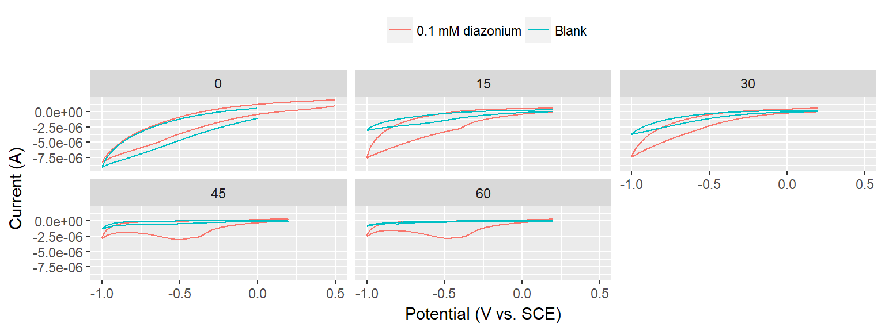
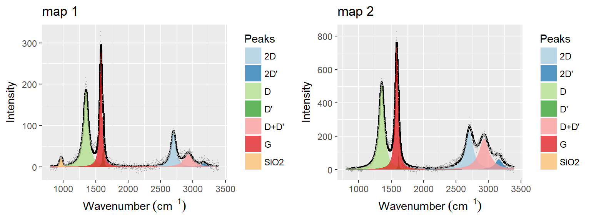
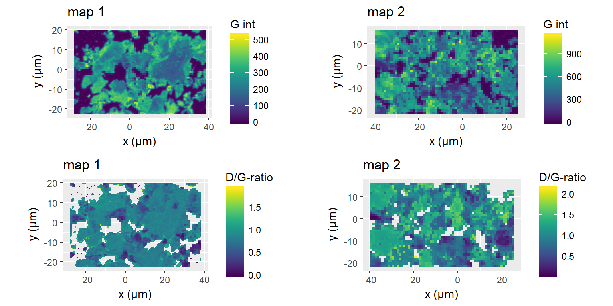
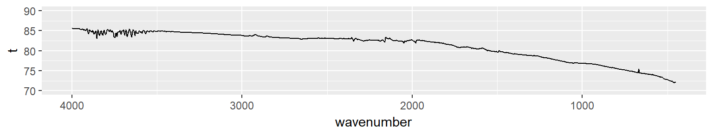

Following the initial tests in the new graphene production setup a batch of amine-functionalised graphene will be produced. Radisurf will attempt surface-polymerisation on the graphene and embed it in a silicone matrix.
library(tidyverse)
library(units)
V = set_units(1500, mL) # Volume of 0.1 M H2SO4 to be used
C_diazo = set_units(2, mmol/L)
M_nitro = set_units(202.64, mg/mmol) # 4-Nitrophenethylamine hydrochloride
M_nitrite = set_units(69.00, mg/mmol) # NaNO2
n_nitro = V * C_diazo
n_nitrite = n_nitro * 2
m_nitro = n_nitro * M_nitro
m_nitrite = n_nitrite * M_nitriteThe 2 mmol/L 4-(2-aminoethyl)benzenediazonium solution is generated in-situ by mixing 1500 mL 0.1 M H2SO4 with 607.92 mg 4-Nitrophenethylamine hydrochloride (3 mmol) and 414 mg NaNO2 (6 mmol). This is stirred for 15 min. The presence of diazonium-compound is confirmed by dissolving a small amount of ferrocene in DMF and adding some of the solution to check for a green color.
To test the stability of the diazonium-compound during the electrochemical exfoliation Cyclic Voltammetry will be used periodically under non-grafting conditions (diazonium concentation < 0.1 mM). A blank CV will be recorded in 9.5 mL 0.1 M H2SO4, 0.5 mL electrolyte solution will be added and a CV recorded for one reductive sweep (range?) using a glassy carbon microelectrode, Pt counter electrode and SCE reference electrode. The temperature should be recorded when extracting samples.
The electrochemical exfoliation of functionalised graphene will be done by positioning and 8x15 cm2 graphite foil between two large stainless steel electrodes and applying 10 V for 1 hour (more if the indication is that the diazonium-salt is still active and the graphite is not fully exfoliated). Weigh the foil before electrolysis
The exfoliated graphene and remaining graphite foil is collected and washed with water and acetonitrile. The graphene is ultrasonicated in DMF and left overnight for graphite to sediment. The upper 95 % of the solution is collected and centrifuged to collect most of the graphene - the remaining part is collected by filtration on 0.45 um nylon membrane filters. All graphene is then ultrasonicated in water and freeze-dried.
The experiment was conducted as described in the protocol. The mass of the graphite electrode was 7.0990 g. The exfoliation was continued for 90 minutes and a ferrocene-test at this point gave a green solution, indicating that diazonium-compound was still present.
The product was dried at 50 °C under vacuum for 2 hours, which was insufficient to completely dry the sample (mass of product at this stage = 279.5 g - 243.9 g = 35.6 g). The mass of the remaining graphite electrode was 1.8904 g, meaning that 5.2086 g graphite was exfoliated in 90 min.
exp170904 <- tibble(
t = c(0, 15, 30, 45, 60, 90),
sample_collected = c(TRUE, TRUE, TRUE, TRUE, TRUE, FALSE),
temp = c(23, 38, 51, 62, 67, 69),
current = c(17.2, 19.4, 19.7, 19.9, 19.0, 12.7),
voltage = rep(10, 6))
knitr::kable(exp170904, col.names = c('Time (min)', 'Sample collected', 'Temp. °C', 'Current (A)', 'Voltage (V)'))| Time (min) | Sample collected | Temp. °C | Current (A) | Voltage (V) |
|---|---|---|---|---|
| 0 | TRUE | 23 | 17.2 | 10 |
| 15 | TRUE | 38 | 19.4 | 10 |
| 30 | TRUE | 51 | 19.7 | 10 |
| 45 | TRUE | 62 | 19.9 | 10 |
| 60 | TRUE | 67 | 19.0 | 10 |
| 90 | FALSE | 69 | 12.7 | 10 |
The exfoliated graphite was then ultrasonicated in 400 mL DMF for 1 hour and left to stand for 2 days (1 was probably enough) to allow residual graphite to sedimentate. The solution was then centrifuged at 4000 rpm for 1 hour and the pellet was collected in water. The remaining graphene solution in DMF was filtered on 0.45 um nylon membrane and the solid product collected in water. The entire graphene solution in water was put in a 500 mL roundbottomed flask and ultrasonicated for 30 min. This was then frozen using liquid nitrogen (LiN) and put on the freeze-drier. Later the same day it was realized that the LiN had not frozen the suspension completely, so instead it was frozen overnight in an ordinary freezer and put on the freeze-drier over a weekend, after which it was completely dry.
An attempt was made to monitor the concentration of diazonium compound during the reaction. This is tricky because it must be done at non-grafting concentrations, meaning the diazonium-concentration should be below 0.1 mM (= very low signal). Blank CVs and CVs in diazonium solution at different times during the experiment is displayed below.
path <- "data/raw_data/electrochemistry/20170904_Gr-NH2_prod_for_Radisurf/"
electrochem170904 <- tibble(filename = list.files(path = path, pattern = "*.txt")) %>%
filter(grepl("^((\\d)|(CV2)|(I))", filename)) %>%
mutate(sample = stringr::str_extract(filename, "^(\\d){2}"), sample = as.numeric(ifelse(is.na(sample), 0, sample))) %>%
mutate(sol = stringr::str_extract(filename, "(blank)"), sol = ifelse(is.na(sol), "0.1 mM diazonium", "Blank")) %>%
mutate(data = map(paste0(path, filename), read_csv, col_names = c('pot', 'cur'))) %>%
unnest()
electrochem170904 %>%
ggplot(aes(pot, cur, color = sol)) +
geom_path() +
facet_wrap(~sample) +
labs(x = "Potential (V vs. SCE)", y = "Current (A)") +
theme(legend.position = "top", legend.title = element_blank())
ggsave("figs/20170904_electrochem_exfoliation.png", width = 16, height = 12, units = "cm", dpi = 300)No clear signal from the diazonium compound is observed in any of the measurements. A crude ferrocene-test gave a green color both before and after the experiment, indicating that the diazonium compound was present.
After freeze-drying the dry graphene product was collected. A total of 3.4196 g was obtained in the process, giving a yield of 65.7 %. The graphene has collected in a mix of denser chunks and thin sheets, and not in as fine a powder as expected. This is probably due to the slower cooling in the freezer, rather than a rapid freeze in LiN just after ultrasonication. However, the product still appears to disperse rather easily upon ultrasonication in solvents.
Raman microscopy was performed on 20170920. The samples was deposited on SiO2 from graphene dispersed in DMF and deposited using the self-assembly method. Two maps were obtained. The first at 33 % intensite (100 % in Wire) with a short acquisition time, and the second at a lower intensity (10 % in Wire) with a longer acquisition time.
Representative Raman spectra and the corresponding curve fit is shown below.
library(osctools)
ramanspecs170920 <- tibble(data = c('data/derived_data/raman/20170920_Gr-NH2_for_Radisurf/20170920 Gr-NH for Radisurf map 1_1691__X_19.5__Y_-16__Time_181.txt', 'data/derived_data/raman/20170920_Gr-NH2_for_Radisurf/20170920 Gr-NH for Radisurf map 2_697__X_7.65858__Y_-11.065__Time_703.txt'),
fits = c('data/derived_data/raman/20170920_Gr-NH2_for_Radisurf/20170920_curvedata_map 1_1691__X_19.5__Y_-16__Time_181.txt','data/derived_data/raman/20170920_Gr-NH2_for_Radisurf/20170920_curvecata_map 2_697__X_7.65858__Y_-11.065__Time_703.txt')) %>%
mutate(names = stringr::str_extract(data, "map\\s\\d")) %>%
mutate(plots = map2(data, fits, gr_cf_fit_plot)) %>%
mutate(plots = map2(plots, names, function(x, y) {x + labs(title = y)}))
g_specs <- gridExtra::arrangeGrob(grobs = ramanspecs170920$plots, ncol = 2)
ggsave(filename = 'figs/20170904_GrNH2_raman.png', plot = g_specs, width = 16, height = 6, units = "cm", dpi = 300)
plot(g_specs)
By mapping over a surface it is reavealed that even though the G intensity varies a lot across the surface, mainly due to differences in thickness, the defect density across the surface is pretty uniform. The defect density varies most on map 2, which was recorded at a lower laser intensity. This means that map 1 might be damaged by the laser during acquisition.
raman170920 <- tibble(
folders = c('data/derived_data/raman/20170920_Gr-NH2_for_Radisurf/20170920 Gr-NH for Radisurf map 1/','data/derived_data/raman/20170920_Gr-NH2_for_Radisurf/20170920 Gr-NH for Radisurf map 2/'),
names = stringr::str_extract(folders, "map\\s\\d")
) %>%
mutate(data = map(folders, raman_curvefit_read)) %>%
unnest()
plot_map <- function(df, feature) {
feature <- enquo(feature)
name <- unique(df$names)[1]
df %>%
select(x, y, value = !! feature) %>%
ggplot(aes(x, y, fill = value)) +
geom_raster() +
coord_equal() +
labs(x = "x (µm)", y = "y (µm)", fill = quo_name(feature), title = name) +
viridis::scale_fill_viridis()
}
g1 <- raman170920 %>%
filter(names == "map 1") %>%
plot_map(`G int`)
g2 <- raman170920 %>%
filter(names == "map 2") %>%
plot_map(`G int`)
g3 <- raman170920 %>%
filter(names == "map 1") %>%
filter(`G int` > 0.05 * max(`G int`)) %>%
plot_map(`D/G-ratio`)
g4 <- raman170920 %>%
filter(names == "map 2") %>%
filter(`G int` > 0.05 * max(`G int`)) %>%
plot_map(`D/G-ratio`)
gridExtra::grid.arrange(g1, g2, g3, g4, ncol = 2)
XPS data was acquired on the freeze-dried powder in two different spots. The summary of the data is presented below.
xpsres170920 <- read_tsv('data/derived_data/xps/20170920_Gr-NH2_for_Radisurf/20170920_xps_ratios.txt', skip = 2)
xpsres170920 %>%
select(ends_with("%")) %>%
rename_all(
funs(
stringr::str_extract(., "^[a-zA-Z0-9\\s]*")
)
) %>%
gather(key = 'element', value = 'value') %>%
group_by(element) %>%
summarise(m = mean(value), sd = sd(value)) %>%
mutate_at(c('m', 'sd'), round, digits = 2) %>%
knitr::kable(col.names = c('Element', 'Mean', 'Std. dev.'))| Element | Mean | Std. dev. |
|---|---|---|
| C 1s | 79.29 | 1.25 |
| Cl 2p | 0.16 | 0.03 |
| N 1s | 0.80 | 0.01 |
| O 1s | 18.62 | 1.19 |
| S 2p | 0.35 | 0.05 |
| Si 2p | 0.78 | 0.05 |
Nitrogen was clearly introduced in the graphene, as would be expected for amine-functionalised graphene. Some of the N might also be from azo-coupled diazonium salt. HR-XPS of the N 1s peak might be able to give more information.
In this data a sulphur-peak was also clearly observed at approx. 168.5 eV. A thiol whould normally be observed at 164 eV, so this suggests that we have -SO4 bound to the surface, as would probably be expected from the oxidative exfoliation in sulphuric acid. Andreas did not observed this in his experiments. It might be possible to anneal the graphene and get rid of this.
Seeing that XPS revealed nitrogen I was tempted to do ATR-IR on some of the powder.
ir170920 <- read_delim('data/raw_data/ir/20170922_ATR-IR_Gr-NH2/Administrator 1001_148.csv', delim = ";", skip = 2, col_names = c("wavenumber", "t"), locale = locale(decimal_mark = ","))
ir170920 %>%
ggplot(aes(wavenumber, t)) +
geom_line() +
scale_x_reverse() +
coord_cartesian(ylim = c(70, 90))
ggsave('figs/20170904_ATRIR_Gr_NH2.png', width = 16, height = 4, units = "cm", dpi = 300)However, it seems that concentration is too low to observed any amine-groups. Maybe it could be possible to deposit the graphene on a reflective surface such as gold and do PM-IRRAS.
Based on XPS-measurements it seems that the amine-functionalisation was succesful. The electrochemical approach was not useful for following the diazonium-concentration.
The freeze-drying procedure was only partly succesfull, since a product that was too compact was obtained. Freeze-drying small amounts (perhaps 100 mL) is probably the way to go.